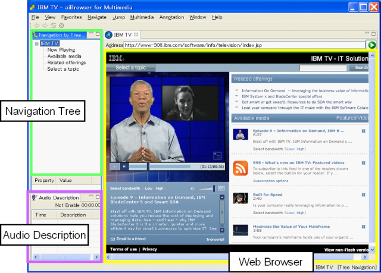

The Web has been evolving rapidly toward visually attractive and intuitive presentations and multimedia content is one of the main examples. It has been very hard for screen reader users to access such multimedia content.
aiBrowser has been developed to evaluate how multimedia content, including dynamically changing content, can be made accessible by screen reader users without seeing a screen or using a mouse. In this section, after introducing the basic browsing method of aiBrowser, three unique characteristics for accessing the multimedia content provided by aiBrowser are described.
aiBrowser provides the same basic browsing functions that screen readers provide. Up and down arrow keys are used to move between elements, and left and right arrow (or "H" and "Shift H") are used for moving between headings. The Home key (or Ctrl + Home) jumps to the top of a page, while End (or Ctrl + End) jumps to the bottom of a page. Link texts are read with "link" and other structural information such as lists, form elements, Flash content and so on are also associated with corresponding text information. The tables for Basic key commands and key reference show all the functions that aiBrowser currently supports.
Note: aiBrowser is alpha code and currently, it fully supports only the functions listed in "key reference". For example, some of basic reading functions are not supported yet, such as moving between characters, words, and paragraphs as well as the clipboard functions.
When a page with multimedia content is opened, the audio often automatically starts playing. Using existing screen readers, there is no way to separately control the audio from the multimedia content and the sounds from the screen reader.
The shortcut keys provided by aiBrowser enable audio control. For example, while the audio is playing, Ctrl + J can be used to turn down the volume from the multimedia audio content, while Ctrl + K will increase the volume. Ctrl + S will stop it, Ctrl + P will play it, the Pause key will pause it, and Ctrl + M will mute that sound.
Note: Some of the multimedia content types are not compatible with these functions. Please refer to the FAQ for the limitations.
Multimedia content pages are usually visually attractive, but there is not much text information to be read. Also, there is not much logical or structural information such as headings, so it is almost impossible to navigate through multimedia content nonvisually. User annotation tries to address these problems by allowing users and volunteers to provide alternative text information and heading information without modifying the original Web content, including any Flash content. This means users do not need to wait until the original content is modified and published.
The text information can be added for images without alt text and also for a Flash object without text labels. Pressing "A" will jump to a position where a user annotation can be added. Then Ctrl + A opens a dialog to input the alternative text. After the text is input, the enter key will register it as an alternative text. This can be repeated as many times as necessary. All of these alternative texts will be available each time the target page is opened.
An alt text can be removed by pressing Ctrl + A again and delete text or all of the user annotations for an entire webpage can be removed by pressing Alt + Ctrl + R.
Note: When the annotated page is opened and no annotation is heard, pressing F4 will re-connect to the annotations. This sometimes happens with Flash content pages, due to a missing Flash loading completion notification.
Heading information can be added to be used as regular headings or as landmarks. aiBrowser provides a function to jump between headings, so this allows for quick browsing in a Web page, heading by heading. By pressing Ctrl + H at a location to add the heading, the position will be registered as a heading position and each time the page is opened, the user annotation will become available.
Heading information for a specific header can be removed by pressing Ctrl + H again or all of the user annotations for an entire page can be removed by pressing Alt + Ctrl + R.
Note: when the annotated page is opened and no annotation is available, pressing F4 will re-connect to the annotations. This sometimes happens with Flash content pages due to a missing Flash loading completion notification.
Fennec is the advanced new function of aiBrowser to make Web contents accessible by providing configuration files. It is a mechanism to reconstruct the layout of a page to be accessible and usable nonvisually, and also adds additional text information to make the voice messages more understandable.
Visual grouping which divide a page into blocks are often presented by using various visual effects, such as background colors, font sizes, images, animations and so on. Such visual effects cannot be conveyed nonvisually. So the grouping information is often lost from the reading information.
Fennec is capable of describing visual grouping information externally and applying it dynamically when a page with Fennec is loaded. This is done with XML-based metadata and can be applied to various types of Web content, such as static HTML, DHTML, and Flash content.
The pages with predefined Fennec are listed in the "favorite menu". aiBrowser provides a favorite menu by pressing Alt + A. When a page is opened with Fennec, the nonvisual browsing will be drastically improved. For example, it will include heading information in appropriate positions and all the reading information can be meaningful. An overview of a page can be grasped by moving between headings (pressing H / Shift+H).
In this current version, the Fennec authoring method is not supported, but it will be added later.
Note: Fennec in the favorites menu works fine for the sample content that existed when aiBrowser was posted on alphaWorks (September 27th). When the pages are updated after that date, there is some possibility that the Fennec data will become obsolete, since it is affected by the layout changes.
Go to YouTube top page, and follow the bellow instructions.
The page will be move to search result page.
After the page is loaded, the movie will start.
If you'd like to search other videos: